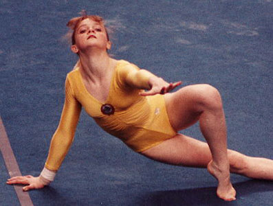

Svetlana Baitova (USSR)
1988 Olympic Team Gold Medalist

Medal Total
Olympics: 1
Gold
World Championships: 1 Gold, 1
Silver
Svetlana was born on September 3, 1972. She got involved in gymnastics at the age of 5, completely by accident. A neighbor's child studied gymnastics with coach Galina Charkevich, and the coach spotted Svetlana during a visit to their apartment building. Baitova trained at Profsoyuz Mogilev and was a member of two world championships teams, and won a team gold medal at the 1988 Olympics.
Svetlana retired in 1990 and began working as a coach/choreographer in 1991. She married and, in 1992, gave birth to a son. Baitova coached abroad, in Qatar, for nearly a year (in 1992). She's remarried and coaches once again in Belarus.
Competition Results
1984 1985 1986 1987 1988 1989 1990 This page was created on September
28, 2002 and was last updated on August 12, 2026.
All-Union Schoolchildren's Spartakiad: 3rd AA (Candidate for Master)
Jr. GDR-USSR Dual Meet: 1st Team, 3rd AA
Jr. USSR Championships: 1st Team, 1st AA
Belarussian Spartakiad: 2nd AA
Blume Memorial: 4th AA
Jr. Friendship Tournament (Druzhba): 1st Team, 4th AA
USSR Championships: 1st AA
USSR Cup: 13th AA
USSR Spartakiade: 3rd UB, 4th B, 6th FX
European Championships: 10th AA
Moscow News: 2nd AA, 1st UB, 1st B, 2nd FX
USSR Championships: 2nd AA, 1st V, 1st B
USSR Cup: 4th AA, 1st V, 1st B
World Championships: 2nd Team, 4th AA, 4th V, 4th UB, 4th FX
American Cup: 2nd AA
Intl. Mixed Pairs: 2nd Team
Olympic Games: 1st Team
USSR Championships: 3rd UB
USSR Cup: 5th AA
USA-USSR Dual Meet: 1st Team, 3rd AA
USSR Championships: 1st B, 6th UB
USSR Cup: 5th AA, 1st B
World Championships: 1st Team
World Sports Fair: 16th AA
© Gymn Forum